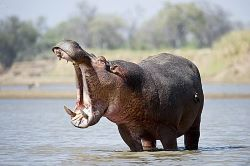

Marre aux hippopatame

Situé à environ 60 kilomètres de Bobo-Dioulasso et créé en 1937,la mare aux hippopotamesest un lac qui fait partie de la réserve de biosphère de Bala qui s'étend sur une superficie de 16300 ha.La réserve a été créée autour d'un lac d'eau douce qui abrite une d'hippopotames. Elle est classée à la convention de Ramsar commen zone humide d'importance internationale. La mare constitue un paradis pour les oiseaux migrateurs,on compte plus de 160 espèces d'oiseaux dont 27 espèces d'oiseaux d'eau et 133 espèces d'oiseaux savanicoles.On y trouve des espèces des espèces peu fréquentes au Burkina-Faso comme le Jacana nain(Microparra capensis),le Colombar maistsou(Treron australis),le Trogon narina(Apaloderma narina) et bien d'autres espèces rares.